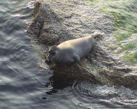

Нерпа
Не́рпы (лат. Pusa) — род из семейства тюленевых. Иногда нерп включают в род тюленей обыкновенных (Phoca). В роде нерп 3 вида.
Размеры и масса
Длина тела до 1,5 м, масса до 100 кг.
Распространение
Кольчатая нерпа встречается в умеренных и холодных водах Тихого и Атлантического океанов и в Северном Ледовитом океане; в России обитает во всех северных морях, а также в Беринговом и Охотском морях. Каспийская нерпа, или каспийский тюлень, живёт в Каспийском море. Байкальская нерпа, или байкальский тюлень, населяет озеро Байкал. Ладожская нерпа, является подвидом кольчатой нерпы, населяет Ладожское озеро.
Питание
Кормятся рыбой и ракообразными верхних слоёв воды.
Источник